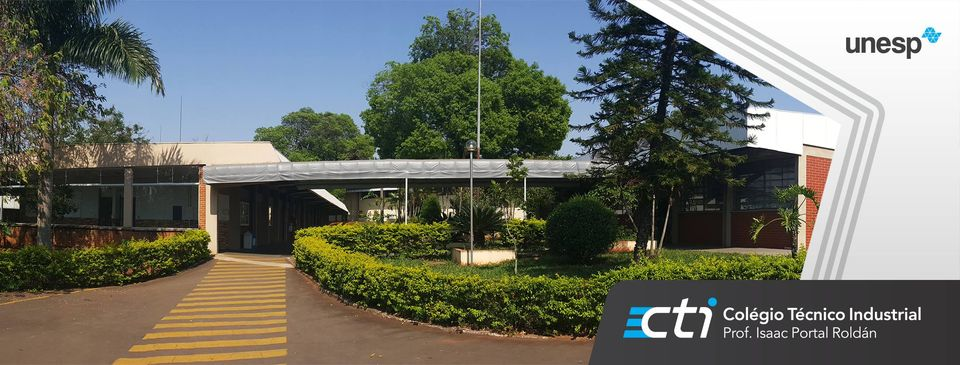

Clique aqui para ser direcionado para baixo!
Meu nome é Gabriel Mariano e estudo no Colégio Técnico Industrial Prof Isaac Portal Roldán.

Meu ensino fundamental foi feito na escolas escolas Colégio Máximo e FAAG, em 2022 prestei o vestibulinho do CTI e entrei como aluno em 2023 no curso de informática, gosto muito de estudar programação. Eu sou da área de programação porque sou mais de Exatas.
No meu tempo livre costumo jogar games como: Valorant, Minecraft, Fortnite e EA FC popularmente conhecido como Fifinha dos CRIA
Criei jogos no SCRATCH num curso do IOT e Desenho bastante, ano passado aprendi pixel art